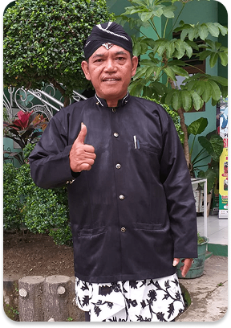
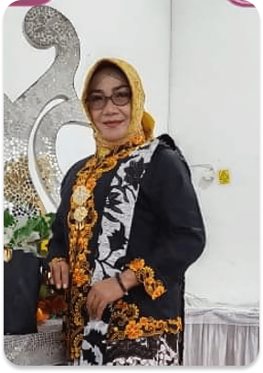
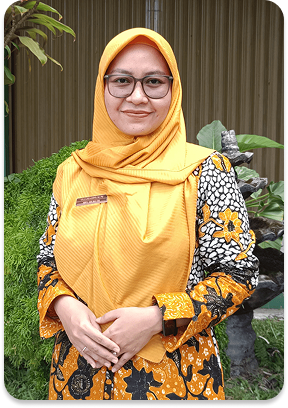

.png)

Priyo Basuki, S.H
WAKASEKBID Kesiswaan

Informasi
Sambutan

Kepala Sekolah
Ali Saefudin, S.H., M.Pd.
Assalamu’alaikum warahmatullahi wabarakatuh, Puji syukur ke hadirat Allah SWT atas segala rahmat dan karunia-Nya, kita dapat berkumpul dalam suasana yang penuh semangat dan optimisme ini.
SMK NU 1 Slawi senantiasa berkomitmen untuk mencetak generasi muda yang kompeten, kuat, cerdas, dan berakhlak mulia. Dalam dunia yang semakin maju dan dinamis, lulusan SMK memiliki peran yang sangat strategis sebagai motor penggerak perubahan di masyarakat. Dengan bekal ilmu pengetahuan, keterampilan, serta karakter yang baik, siswa-siswi SMK NU 1 Slawi siap menghadapi tantangan global dan berkontribusi bagi kemajuan bangsa.
Oleh karena itu, di SMK NU 1 Slawi, kami tidak hanya mendidik siswa untuk menguasai keterampilan teknis, tetapi juga menanamkan nilai-nilai moral dan keagamaan yang kuat, sehingga mereka dapat menjadi sumber daya manusia yang tidak hanya cerdas dan terampil, tetapi juga berakhlak mulia.
Sambutan

WAKASEKBID Kesiswaan
WAKASEKBID Hubungan Masyarakat

WAKASEKBID Sarana dan Prasarana

WAKASEKBID Kurikulum
Portal Aplikasi
Alumni 1998
“Sebagai alumni angkatan 2018, saya bangga pernah bersekolah di SMK NU 1 Slawi…”
Alumni 1998
“Sebagai alumni angkatan 2018, saya bangga…”
Alumni 1998
“Guru-guru inspiratif, lingkungan nyaman…”
Tertarik Untuk Bergabung Dengan
SMK NU 1 Slawi ayo daftar Sekarang !!